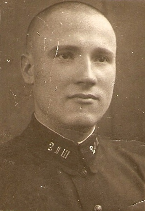

Попов Иван Сергеевич
Родился в 1913 году в д.Митино Нижнеенангского сельсовета. В 1933 году был призван в Красную армию. Прошёл всю Великую Отечественную войну. До 1961 года продолжал службу в Вооружённых Силах СССР. Участник Парада Победы 24 июня 1945 года на Красной Площади.